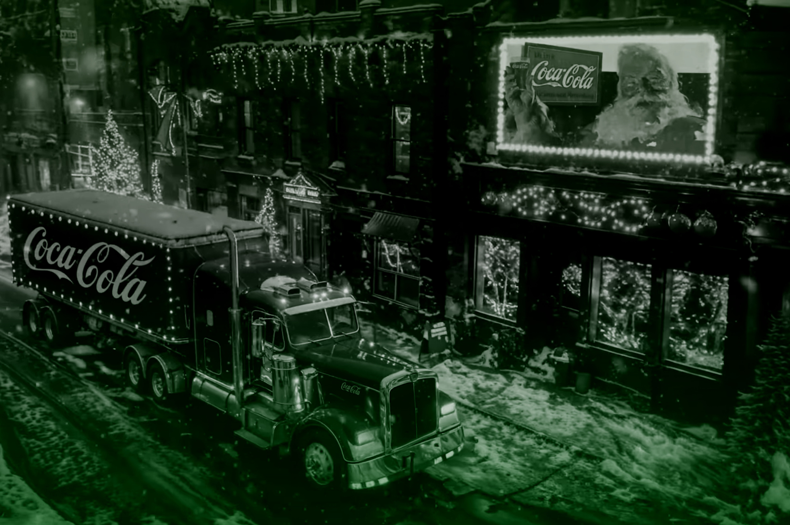
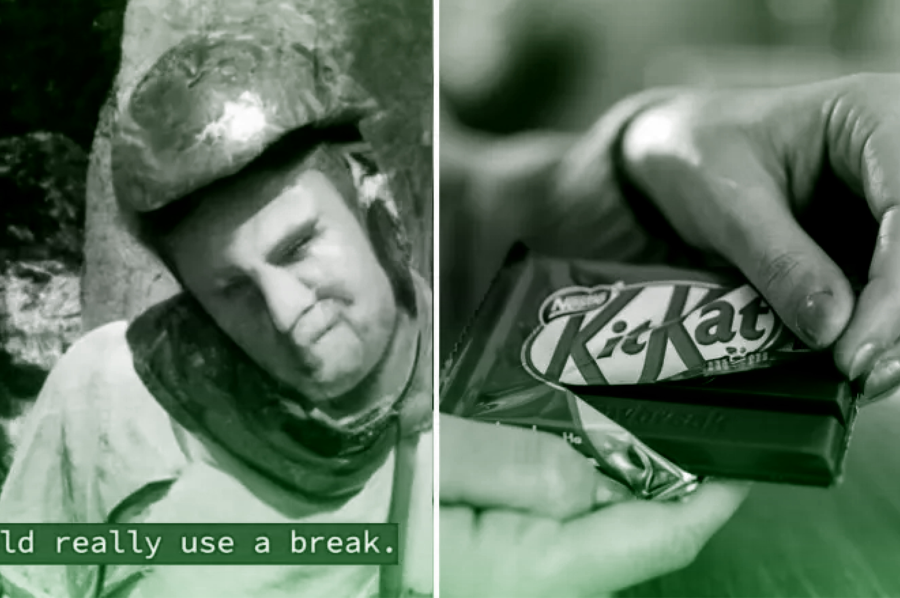

Campañas criticadas por
el uso de IA


Título de la campaña
Descripción detallada de la campaña.
Los anunciantes están aumentando rápidamente el uso de la IA en la creación de anuncios, pero las actitudes de los consumidores se han vuelto más negativas. La brecha entre la percepción del anunciante y la opinión del consumidor sigue ampliándose.


Descripción detallada de la campaña.
solamente el 0.38% de su ingreso anual